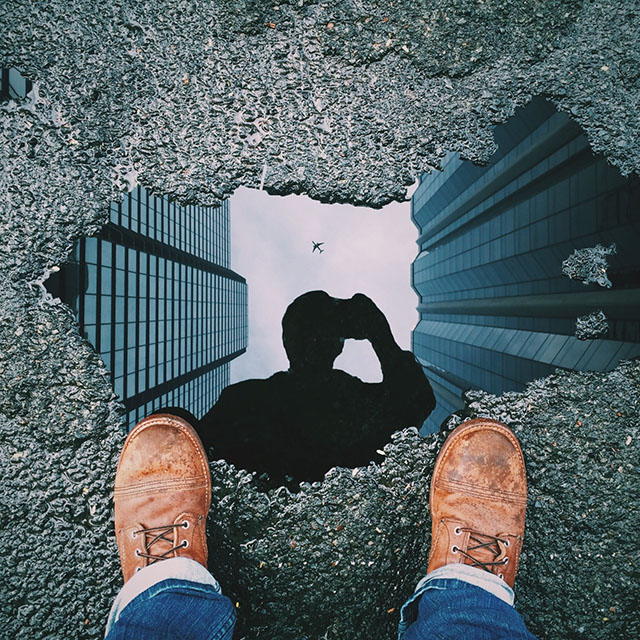

Reflections
Date: 23 March, updated on 23 May
What's your take on the DBC / EDA experience?
I knew this would be a challenge, but it turns out it is not only a change of mindset for me - but also my whole family. The glue that has enabled everyone else to walk out the door without worrying about food, clothes or where most things are is walking away to study.. I have been practising amnesia and letting family members be responsible for their own belongings. Hopefully everyone will all slowly adjust to looking after themselves, bu it doesn't happen overnight.
What are your impressions?
This is the kind of style of learning that we should be doing with our children and changing the current school format to change what teachers do. EDA teachers are mentors, it is the type of learning I have heard talked about, but not seen in practice until now. I have heard talk about changing the name of teachers in education to be called change agents. This is what EDA are truly putting into practice. Ken Robinson also has plenty to say about this kind of group learning in his Ted Talks for the education sector. You learn better when you are self motivated and want to do better/solve a problem/ or find a way forward.
How do you see yourself engaging with this type of culture?
I have already visited the Wellington Hub and seen group work in progress and the team brainstorming for finding a good solutions. I know this is the way forward, having worked for years with my design business, but also facilitating a learning network, so I am excited about the prospects. I need to admit I do not know the way forward quickly, limit my research times, and ask for help earlier. The culture is fine, I just want to try and keep up with the work and not fearing the jump ahead.
Have your expectations of EDA changed? If so, how?
Yes, dramatically so.. only some of this unique and experimental way of learning was visible from afar before I joined the course. I like the kitchen versus restaurant example of owning your own education process instead of it being within a consumer process. Why do we assume all learning must be taught and learn in a certain way using testing and repeated reinforcement of facts handed to us on a plate? I realise I am the compass and need to learn how to direct myself to use the maps effectively.
Are you excited to participate in this kind of learning environment? Does it make you nervous?
Im very excited, and of course it makes me nervous - anything unknown is like this, and I seem to be in continual catch-up. After the first influx of information when you feel totally overloaded. I need to plan take more strategic learning steps - one at a time - that ’s all I can do. Others already more advanced than me. As long as we review and evaluate each step as a group as we go forward, it should end up in a better direction. This is truly unstoppable learning! There is a new big world out there to waiting for us to discover, but can I actually keep up with everyone else, and can my brain take it